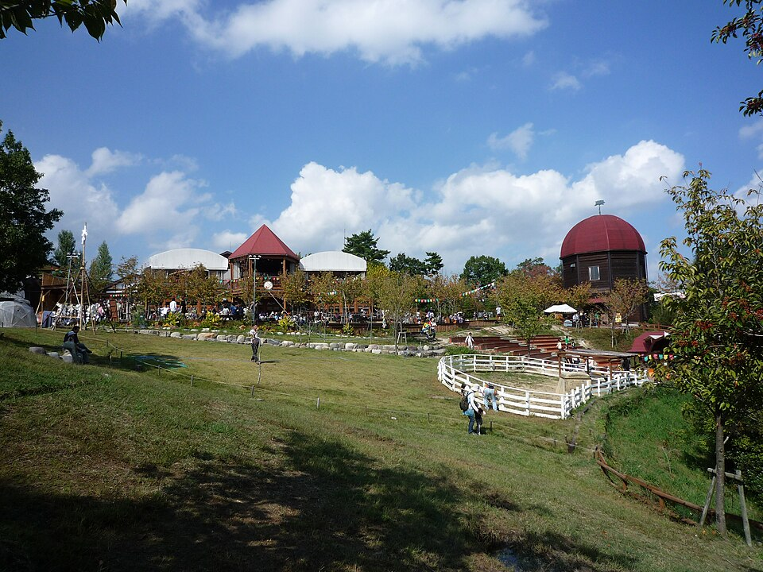
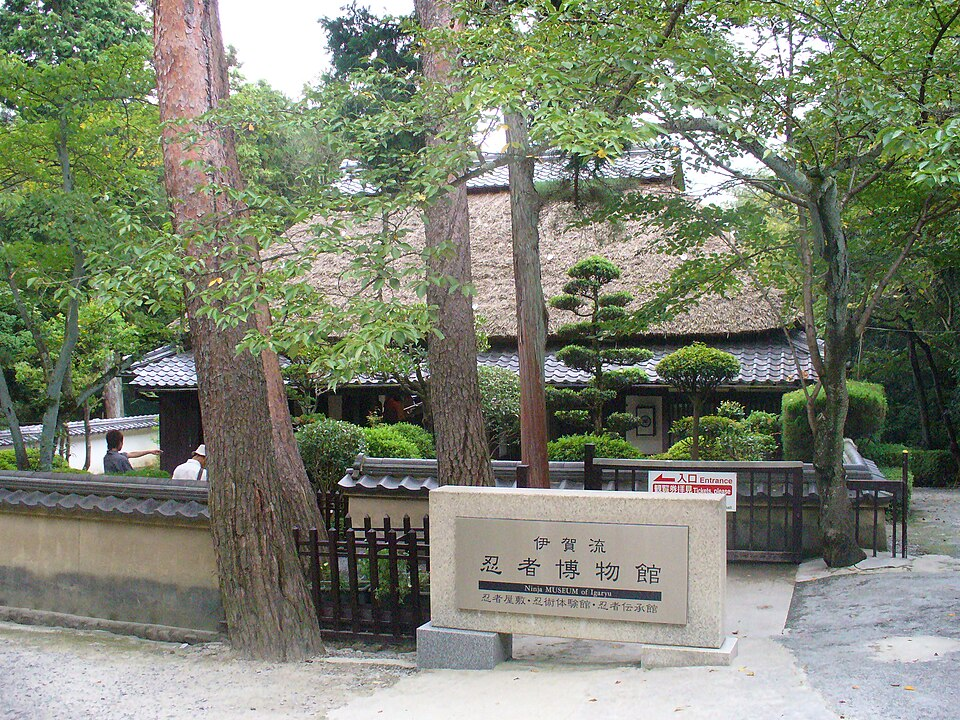
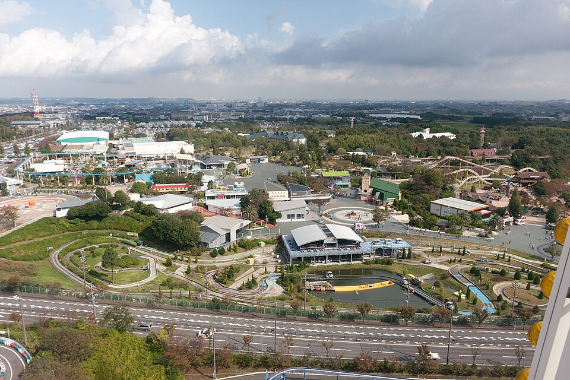
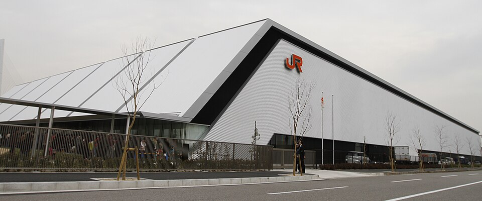

写真を読み込めませんでした。公式サイトでご確認ください。
PHOTO © outside / CC BY-SA 3.0・縮小／元画像の詳細は出典一覧
刈谷より前三重・伊賀
伊賀の里モクモク手づくりファーム
2,800円（入園のみ）
名阪国道・壬生野ICから約8分 / 目安 2〜3時間
農場の動物や手づくり体験が中心。入園料は大人800円、小学生600円。体験・飲食は別料金。
使いどころ
名阪国道から近く、節約重視なら有力。朝から回る日は出発を早めに。

12 FAMILY SPOTS
大人2名＋小学生2名の仮定で料金比較。途中下車と再流入でETC・高速料金が変わるため、遊び場は1日につき原則1施設を推奨。
IMPORTANT / LOCATION
大阪側 / BEFORE KARIYA
夜出発で刈谷まで先に行くと通り過ぎる施設です。ここが本命なら大阪を朝出発して観光→刈谷で入浴。
静岡側 / AFTER KARIYA
刈谷PAで温泉・仮眠を取った翌朝から東へ進む流れに合います。車中泊モデルならここから選ぶのがおすすめ。
VALUE / LOW-COST
エアーパーク無料、のんほい4,400円、掛川花鳥園6,000円（いずれも4人のモデル料金）。
PICK A PARK
絞り込みは料金の安さや位置関係で選べます。画像は権利を確認した写真をGitHubに保存したものです。
12施設を表示中

2,800円（入園のみ）
名阪国道・壬生野ICから約8分 / 目安 2〜3時間
農場の動物や手づくり体験が中心。入園料は大人800円、小学生600円。体験・飲食は別料金。
名阪国道から近く、節約重視なら有力。朝から回る日は出発を早めに。

3,400円（入館のみ）
名阪国道・上野IC付近から立ち寄り / 目安 1〜2時間
からくり屋敷や忍者展示。大人1,000円、小学生700円。忍術実演ショーは別料金。
名阪国道沿いの短時間観光として相性が良い。ショーの当日開催状況は確認。

16,400円（WEBパスポート料金例）
名阪国道・関ICまたは亀山ICから約30分 / 目安 4〜6時間
子どもが自分で運転・操作できる乗り物が特色。例：大人4,800円、小学生3,400円のWEB乗り放題。日別変動。
半日以上確保。レース日はアクセス・駐車場とも混雑しやすい。

21,000円（乗り放題）
伊勢湾岸道・湾岸長島IC付近 / 目安 4〜7時間
絶叫系からキッズ向けまで大型遊園地。乗り放題は大人6,000円、小学生4,500円。入園だけなら4人で5,800円。
予算は高め。刈谷PAより前なので夜出発・翌朝訪問には逆走が発生。
8,800〜9,600円（4人）
湾岸長島IC付近・ナガシマ隣接 / 目安 2〜4時間
幼児向けのキャラクター体験。1歳以上一律2,200〜2,400円。小学生には年齢や好みによって物足りない可能性。
家族4人でも幼児中心向け。事前の日時指定チケットを推奨。

17,200円〜（事前WEBの下限例）
伊勢湾岸道・名港中央IC付近 / 目安 4〜6時間
レゴの乗り物・街並み・ワークショップ。大人4,900円〜、子ども3,700円〜。来園日で変動。
乗り物を丸一日遊びたい家族向け。刈谷PAより手前。

3,400円（入館）
伊勢湾岸道・名港中央IC付近 / 目安 2〜3時間
新幹線・リニアの実物車両展示。大人1,200円、小中高生500円。シミュレーター等は別条件。
雨でも安心、レゴランドより低予算。乗り物好きの子におすすめ。

16,000円〜（平日パスポート4人）
東名・音羽蒲郡ICから約20分 / 目安 3〜5時間
アトラクションと海沿いの雰囲気。平日のA料金：パスポート大人4,600円・小学生3,400円。入園のみ4人7,200円。
刈谷で仮眠後にも寄れる。夜のイルミネーションは期間を確認。

4,400円（入園＋遊園地パス）
豊橋市・東名ICから一般道へ（所要は要ナビ確認） / 目安 3〜5時間
動物園＋自然史博物館＋遊園地。入園1,400円（4人）＋乗り放題3,000円（4人）の組合せ。
今回の最有力コスパ候補。広い園内なので3時間以上の滞在が安心。

無料（入館・駐車場）
東名・浜松西IC側から市街地へ / 目安 1.5〜3時間
戦闘機展示や航空機の歴史、シアター・一部体験展示。月曜・最終火曜等は休館。開館9:00〜16:00。
車中仮眠翌日の節約観光に最適。ただし飛行機に興味のない子は所要短め。
日付で変動（4人料金は公式で確認）
東名・舘山寺スマートIC（ETC）から約5分 / 目安 3〜5時間
家族向けの遊園地。園内アトラクションを乗りたいだけ楽しむ。日付・年齢・フリーパス種別で料金が変動。
遊園地重視で東名ルートを選ぶときに好相性。既存旅行サイトにも掲載。

6,000円（4人）
東名・掛川ICから約5分 / 目安 2〜3時間
全天候型の温室と鳥のふれあい。大人2,000円・小学生1,000円。雨の日でも行動しやすい。
刈谷車中仮眠→掛川花鳥園→焼津の流れが効率的。
SAMPLE PLANS
A / 予算最優先
刈谷で仮眠し、豊橋の動物園＋乗り物で4人4,400円。半日コース。雨なら次のCへ。
B / テーマパーク重視
園内でたっぷり遊ぶ日。4人でパスポート16,000円〜。観光後のホテル着は遅めになる見込み。
C / 雨でも安心
雨の日に強い。4人6,000円の入園料と、焼津までの移動のしやすさを両立。